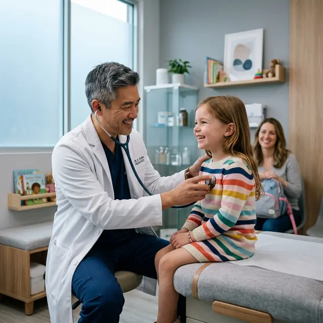

Série gratuita de 3 aulas
Pneumonia na emergência pediátrica.
Domine o tratamento da pneumonia que está lotando o seu plantão pediátrico. Aprenda a reconhecer, classificar e conduzir a criança com total segurança, sem pedir exames desnecessários por garantia.

Deixe seu comentário sobre a aula.
Conta pra gente: qual foi o maior insight? E qual a sua maior dificuldade com pneumonia no plantão? O Dr. Caíque e a equipe leem tudo, e as dúvidas mais comuns viram pauta da próxima aula.